Matteo Francia DISI — University of Bologna m.francia@unibo.it
Which functionalities for (automated) data governance can you think about?
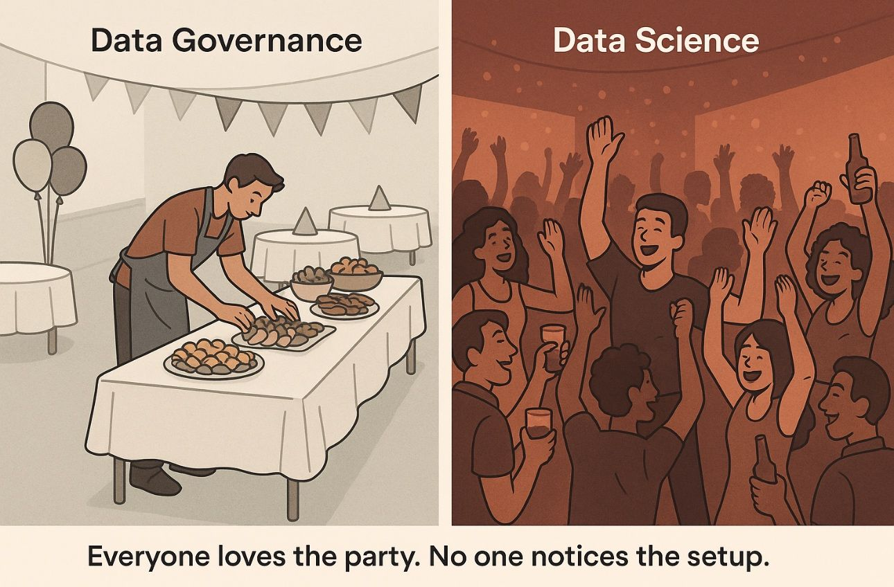
Data governance
Managing data platforms
Each governance capability answers a practical platform question.
Tracking data pipelines: Data provenance
Tracking changes: Data versioning
Understanding the data: Data profiling
Integrating data sources: Entity resolution
…
Data governance
Data governance
Techniques to ensure that data is secure, private, accurate, available, and usable
It includes the actions people must take, the processes they must follow, and the technology that supports them throughout the data life cycle
Every organization needs data governance since industries proceed on their digital-transformation journeys
A data steward is a role that ensures that data governance processes are followed and that guidelines are enforced, and recommends improvements to data governance processes.
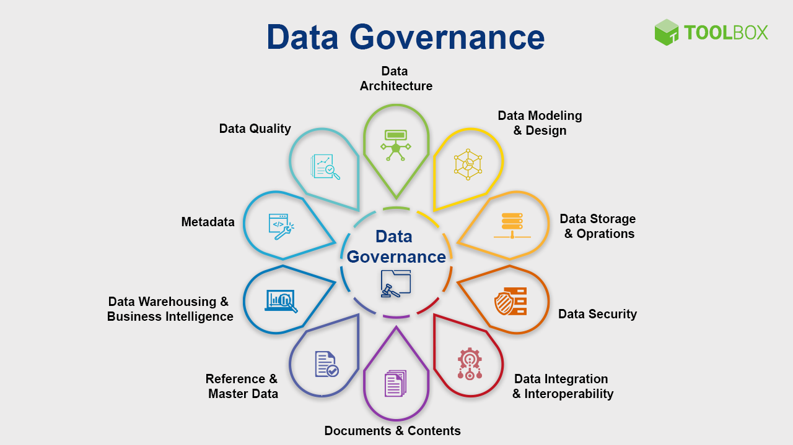
Data governance
Case study: data governance
Problem: how can we manage a datalake?
You are working for a consultancy company specialized in data engineering (this is a typical use cases of internships or thesis projects).
Your client is a large enterprise that has accumulated massive amounts of heterogeneous data across departments.
Goal: assess and organize the data lake to produce unified data assets ready for downstream analytics.
Data lakes collect data from different sources (e.g., departments)
Files may have:
Different formats (CSV, Excel, JSON)
Different schemas (column names vary)
Duplicated or overlapping concepts
A (table) schema is the blueprint or structure that defines how data is organized (within a table), specifying the names, data types, and constraints (for each column).
Users need to find and integrate relevant data but they don’t know:
A broad range of methods to efficiently analyze a given data set
E.g., in a relational scenario, tables of a relational database are scanned to derive metadata, such as data types, completeness and uniqueness of columns, keys and foreign keys, and occasionally functional dependencies and association rules
Distributed data architecture under centralized governance for interoperability, enabled by a shared and harmonized self-serve data infrastructure
Domain-oriented decentralized data ownership
Decentralization and distribution of responsibility to people who are closest to the data, to support continuous change and scalability
Each domain exposes its own operational/analytical APIs
Data as a product (quantum)
Products must be discoverable, addressable, trustworthy, self-describing, and secure
Self-serve data infrastructure as a platform
High-level abstraction of infrastructure to provision and manage the lifecycle of data products
Federated computational governance
A governance model that embraces decentralization and domain self-sovereignty, interoperability through global standardization, a dynamic topology, and automated execution of decisions by the platform
Data Mesh organizes data around business domain owners and transforms relevant data assets (data sources) to data products that can be consumed by distributed business users from various business domains or functions.
Data products are created, governed, and used in an autonomous, decentralized, and self-service manner
Self-service capabilities, which we have already referenced as a Data Fabric capability, enable business organizations to entertain a data marketplace with shopping-for-data characteristics
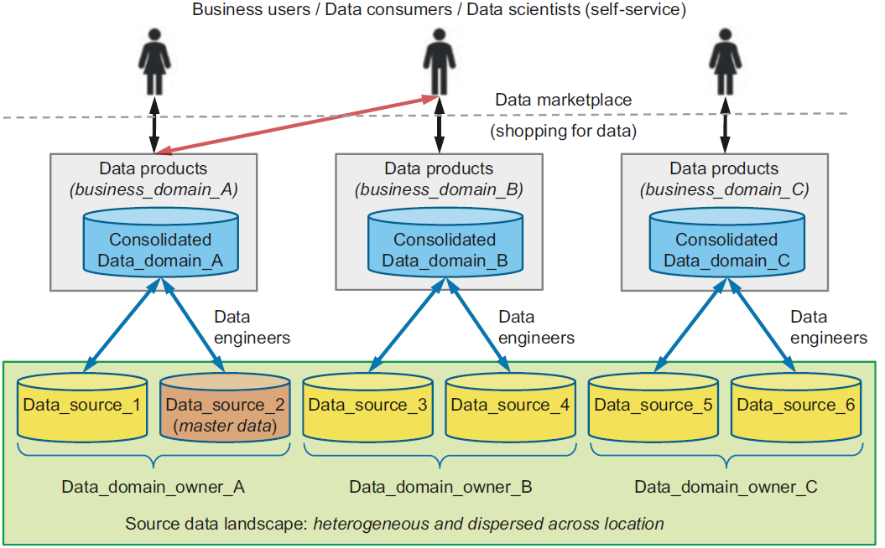
Data mesh
What makes data a product?
A data product is raw data transformed into a business context
Data products are registered in the knowledge catalog through specifications (XML, JSON, etc.).
Data products need to be searchable and discoverable by potential data product consumers and business users.
Cataloged: All data products need to be registered in the knowledge catalog.
Data product description: The data product needs to be well-described.
Access methods: for example, REST APIs, SQL, NoSQL, etc., and where to find the data asset.
Policies and rules: who is allowed to consume the data product for what purpose.
SLAs: agreements regarding the data product availability, performance characteristics, functions, and cost of data product usage.
Data products themselves are not stored in the knowledge catalog
Case study: data mesh
Check the seminars from HERA.
End of the case study
Data mesh vs data fabric: emphasis
Both provide an architectural framework to access data across multiple technologies and platforms.
Data fabric
Attempts to centralize and coordinate data management
Tackles the complexity of data and metadata in a smart way that works well together
Focus on the architectural, technical capabilities, and intelligent analysis to produce active metadata supporting a smarter, AI-infused system to orchestrate various data integration styles
Data mesh
Emphasis on decentralization and data domain autonomy
Focuses on organizational change; it is more about people and process
Data are primarily organized around domain owners who create business-focused data products, which can be aggregated and consumed across distributed consumers
As new technologies and solutions mature to support a centralized approach to data access, distributed approaches like Data Mesh are expected to fall increasingly out of favor in enterprise IT.
Data mesh: hype-cycle positioning
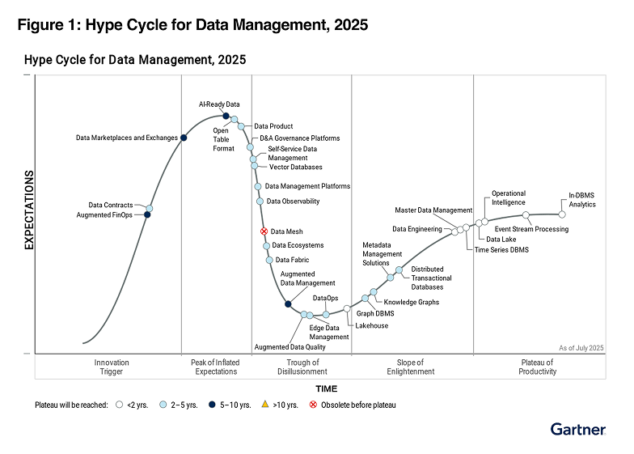
2025
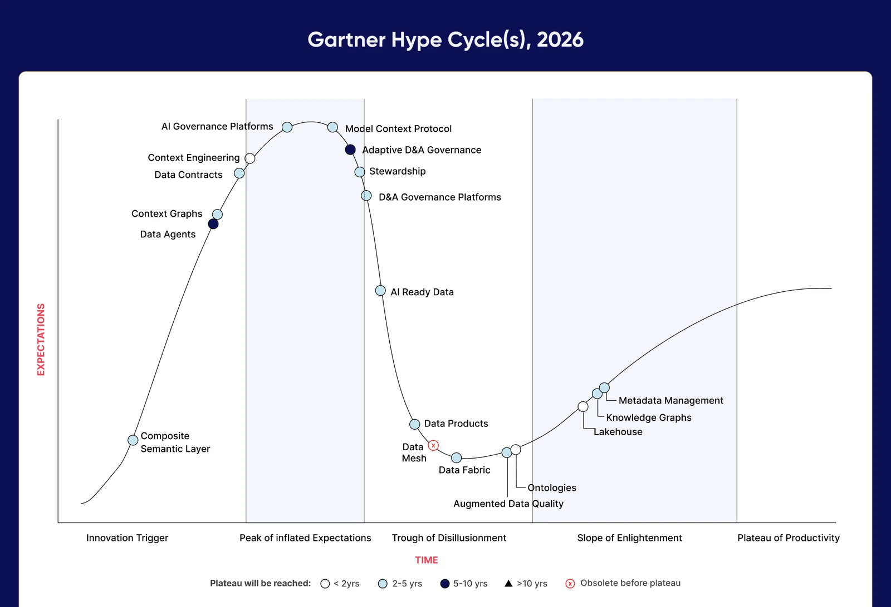
2026
What changes with Agents, LLMs, and generative AI?
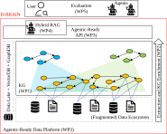
Digital brain
The main shift:
A data platform does not only store and process data
It also explains data assets, relationships, and usage constraints
Metadata becomes context for both humans and AI agents
Semantic layer
A semantic layer maps technical assets to business concepts.
Tables become business entities
Columns become metrics, dimensions, policies, and definitions
Queries can use business language instead of physical schemas
Close to ontology-based data access, where users query a conceptual layer while mappings connect it to source data (Bienvenu and Ortiz 2018).
Retrieval-Augmented Generation (RAG) retrieves external evidence before the LLM generates an answer (Lewis et al. 2020).
In a data platform, the retrievable corpus can include:
catalog descriptions, data-product documentation, access policies and data-quality checks
lineage graphs and pipeline logs
notebooks, dashboards, tickets, and incident reports
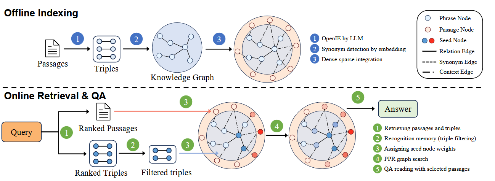
HippoRAG2
GraphRAG for connected metadata
Plain RAG retrieves similar chunks.
GraphRAG builds a graph of entities and relationships, then retrieves from that graph for local and global questions (Hogan et al. 2021; Edge et al. 2025).
Example question:
Which data products would be affected if we changed the customer identifier in the CRM ingestion pipeline?
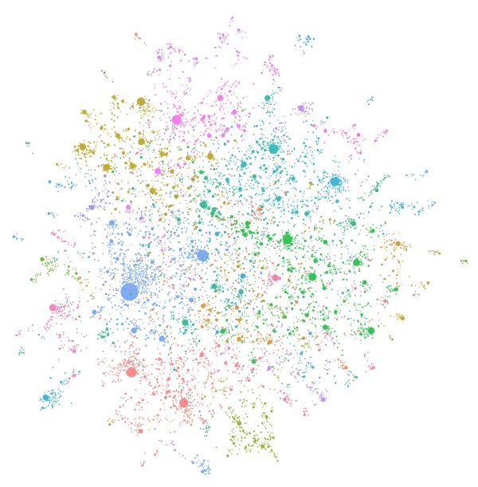
GraphRAG
LLM wiki for data products
An LLM wiki is a curated, human-readable layer generated from governed platform metadata.
Useful rule:
Every generated page must cite catalog, lineage, or documentation sources.
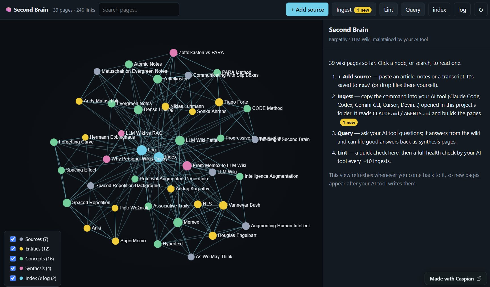
LLM wiki
Data agents
A data agent is a governed conversational layer over a data platform.
It combines an LLM with platform tools:
semantic models, catalogs, schemas, and policies
SQL, DAX, KQL, search, or code execution tools
user permissions and governance checks
readable answers with tables, charts, queries, or citations
The term is broad: recent work distinguishes simple query assistants from more autonomous agents for data management and analysis (Sui et al. 2026).
Examples:
Microsoft Fabric Data Agent
Databricks Genie Agents
Snowflake Cortex Agents
AI-powered data platforms: risks
The AI layer must inherit platform governance.
Grounding: answers must point to catalog, lineage, and source documents
Freshness: generated pages must expire or refresh when metadata changes
Access control: retrieval must respect user permissions
Evaluation: test answers on real platform questions, not generic prompts
Human review: generated documentation should be reviewed for critical data products
Takeaway:
AI makes metadata more usable, but it also makes metadata governance more important.
“Example” of architecture
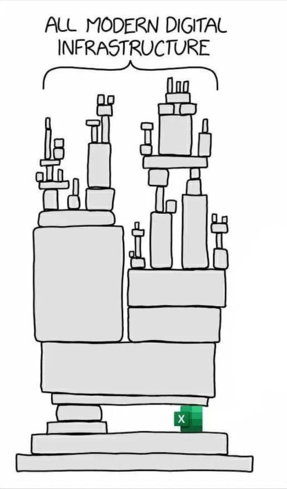
https://xkcd.com/2347/
(*) “Ormai sta xkcd è una base troppo usata” A. Tappi
“Example” of modern architecture
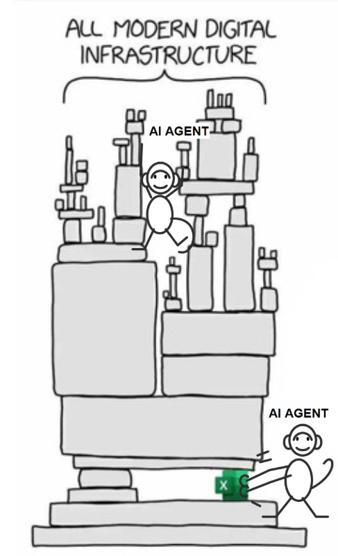
https://xkcd.com/2347/
(*) “Per un totale di 4 crediti” N. Narducci
References
Barika, Mutaz, Saurabh Garg, Albert Y Zomaya, Lizhe Wang, Aad Van Moorsel, and Rajiv Ranjan. 2019. “Orchestrating Big Data Analysis Workflows in the Cloud: Research Challenges, Survey, and Future Directions.”ACM Computing Surveys (CSUR) 52 (5): 1–41.
Bienvenu, Meghyn, and Magdalena Ortiz. 2018. “Ontology-Based Data Access: A Survey.”Proceedings of the Twenty-Seventh International Joint Conference on Artificial Intelligence, 5511–19. https://doi.org/10.24963/ijcai.2018/777.
Bruno, Nicolas, and Surajit Chaudhuri. 2002. “Exploiting Statistics on Query Expressions for Optimization.”Proceedings of the 2002 ACM SIGMOD International Conference on Management of Data, 263–74.
Burkhard, Walter A., and Robert M. Keller. 1973. “Some Approaches to Best-Match File Searching.”Communications of the ACM 16 (4): 230–36.
Edge, Darren, Ha Trinh, Newman Cheng, et al. 2025. “From Local to Global: A Graph RAG Approach to Query-Focused Summarization.”arXiv Preprint arXiv:2404.16130.
Forresi, Chiara, Enrico Gallinucci, Matteo Golfarelli, and Hamdi Ben Hamadou. 2021. “A Dataspace-Based Framework for OLAP Analyses in a High-Variety Multistore.”The VLDB Journal 30 (6): 1017–40. https://doi.org/10.1007/S00778-021-00682-5.
Herschel, Melanie, Ralf Diestelkämper, and Houssem Ben Lahmar. 2017. “A Survey on Provenance: What for? What Form? What From?”The VLDB Journal 26 (6): 881–906.
Hogan, Aidan, Eva Blomqvist, Michael Cochez, et al. 2021. “Knowledge Graphs.”ACM Computing Surveys 54 (4): 1–37. https://doi.org/10.1145/3447772.
Ikeda, Robert, and Jennifer Widom. 2009. Data Lineage: A Survey. Stanford InfoLab.
Lcvenshtcin, VI. 1966. “Binary Coors Capable or ‘Correcting Deletions, Insertions, and Reversals.”Soviet Physics-Doklady 10.
Lewis, Patrick, Ethan Perez, Aleksandra Piktus, et al. 2020. “Retrieval-Augmented Generation for Knowledge-Intensive NLP Tasks.”Advances in Neural Information Processing Systems 33: 9459–74.
Mann, Bob. 2002. “Some Data Derivation and Provenance Issues in Astronomy.”Workshop on Data Derivation and Provenance, Chicago.
Moreau, Luc, and Paul Groth. 2022. Provenance: An Introduction to PROV. Springer Nature.
Munappy, Aiswarya Raj, David Issa Mattos, Jan Bosch, Helena Holmström Olsson, and Anas Dakkak. 2020. “From Ad-Hoc Data Analytics to Dataops.”Proceedings of the International Conference on Software and System Processes, 165–74.
Olesen-Bagneux, Ole. 2023. The Enterprise Data Catalog. "O’Reilly Media, Inc."
Papadakis, George, Dimitrios Skoutas, Emmanouil Thanos, and Themis Palpanas. 2020. “Blocking and Filtering Techniques for Entity Resolution: A Survey.”ACM Computing Surveys (CSUR) 53 (2): 1–42.
Simmhan, Yogesh L, Beth Plale, Dennis Gannon, et al. 2005. “A Survey of Data Provenance Techniques.”Computer Science Department, Indiana University, Bloomington IN 47405: 69.
Sui, Yuan, Yaqi Wang, Zheng Lin, et al. 2026. Data Agents: Levels, State of the Art, and Open Problems. https://arxiv.org/abs/2602.04261.